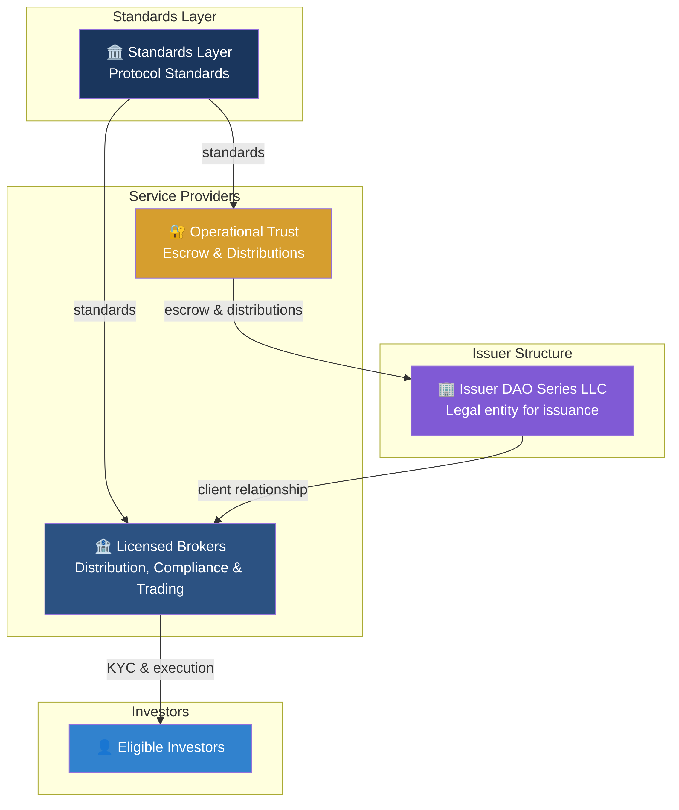
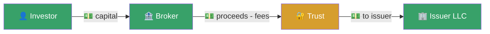
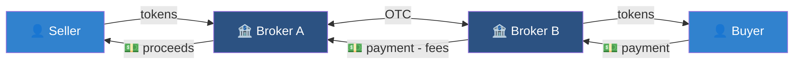
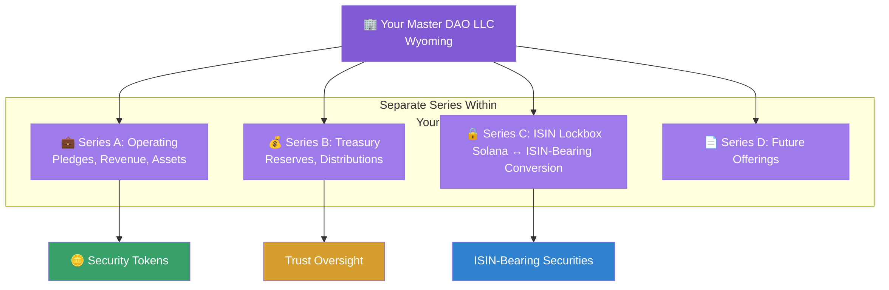
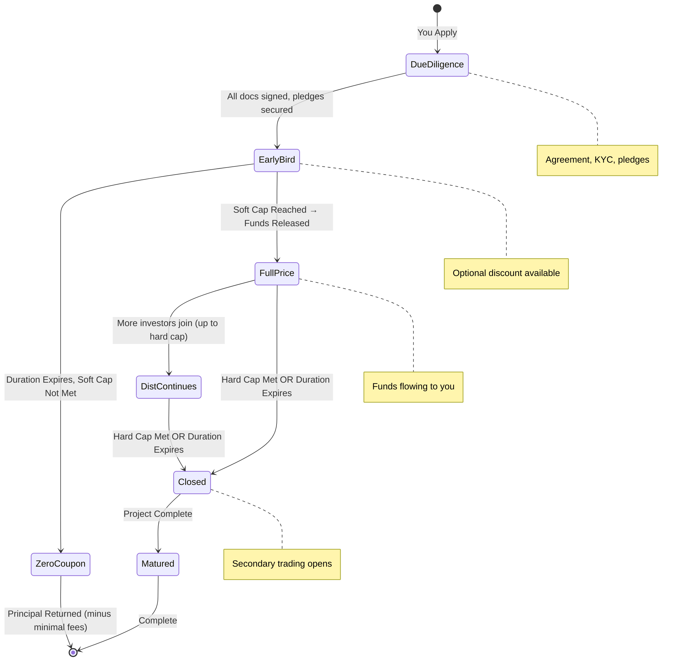
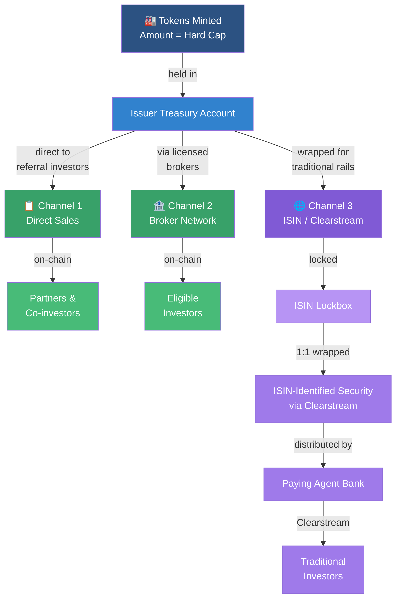
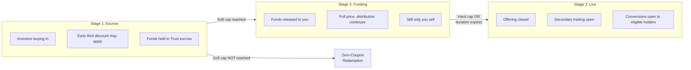
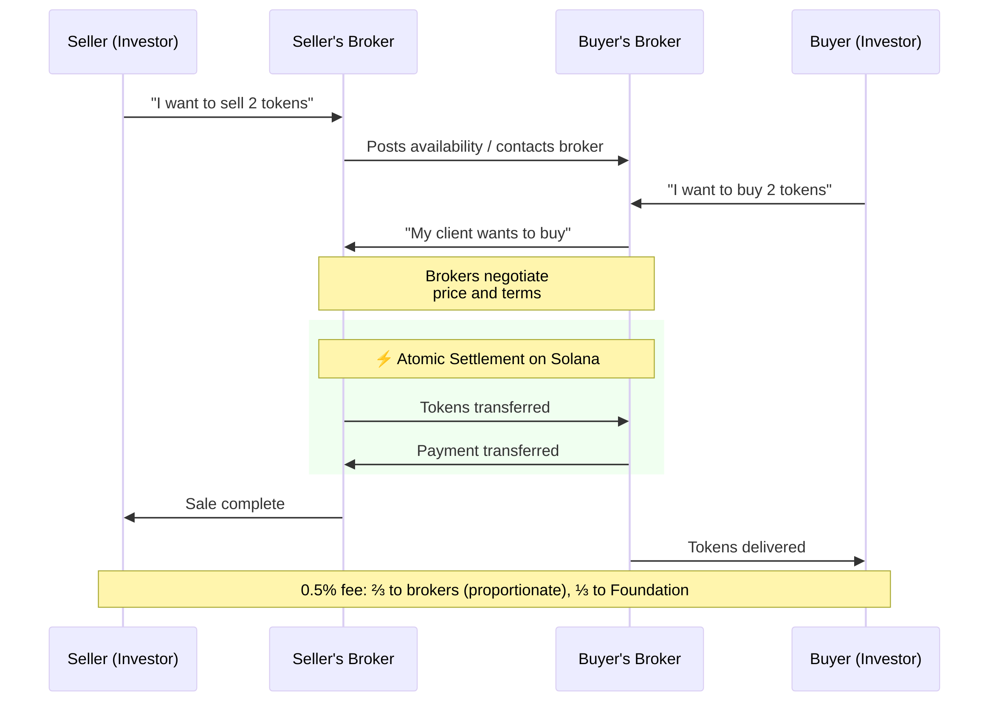
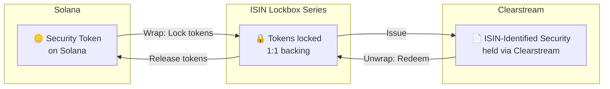
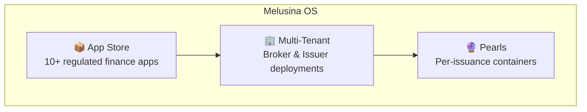

Welcome to the next decade of capital markets that belongs to savvy issuers and visionary investors who stop choosing between worlds. Sails.to is the comprehensive self-hostable platform for established businesses and professional investors to issue, manage and trade securities that live seamlessly across TradFi and DeFi.
Sails.to ecosystem description
How It All Works
What is Sails.to?
Sails.to enables companies to raise capital by issuing compliant digital securities to eligible, KYC-verified investors. Issuers establish their own legal structure, define security terms, and licensed brokers distribute the offering to their investor networks.
All transactions settle on Solana — instantly, atomically, and transparently. Investors who require traditional infrastructure can hold the same security via Clearstream, identified by an ISIN the issuer registers.
Key distinction: These are real securities, not crypto assets. Ownership, transfer, and resale are legally restricted and enforced both on-chain and off-chain. For example, transfers require a valid KYC credential, and brokers verify eligible counterparties before execution.
There are five types of participants in the system:
Issuers — Companies raising capital through their own legal entity
Investors — Eligible, KYC-verified participants
Licensed Brokers — Distribution, compliance, and trading
Operational Trust — Escrow during issuance, distributions after
Standards Layer — Protocol standards and reference software

Primary Issuance

Returns & Distributions
Secondary Trading

Player
What They Do
Real-World Equivalent
Issuers (You)
Companies that raise capital — you create your own DAO Series LLC as the legal entity that anchors issuance and control
Like a company doing a private placement
Investors
Eligible, KYC-verified investors who purchase securities through licensed brokers
Hedge funds, family offices, accredited individuals
Licensed Brokers
Licensed firms that perform compliance checks, maintain client relationships, distribute offerings, and handle secondary trading
Like placement agents or broker-dealers
Operational Trust
Licensed fiduciary (SVG Financial Trustee) that holds funds in escrow during issuance and distributes payments to investors after
Like an escrow agent or paying agent
Standards Layer
Publishes protocol standards and reference software that enables interoperability
Like FIX Protocol Ltd — publishes standards that brokers use
⚠️ Important: Only verified, eligible investors may participate, subject to jurisdictional requirements. Offerings may set a minimum investment amount (a typical minimum is $150,000). Eligibility and investor classification depend on jurisdiction and verification standards. US investors are typically verified as accredited investors under Regulation D. Non-US investors typically participate under Regulation S.
This is a general framework and not legal advice; offering terms may vary.
2. Your Legal Structure
When you raise capital through Sails.to, you create your own DAO Series LLC (e.g., Wyoming or Marshall Islands, depending on preference). This is your legal structure — you own it and control it. Your securities are issued within your own legal entity — not by Sails.to.
A DAO is a governance model where rules can be executed by smart contracts. The legal entity is the DAO Series LLC (or equivalent) that adopts this governance.
Why a DAO Series LLC?
Self-Custody, Self-Control
Your securities live in your own legal entity. You are not handing assets to a platform or relying on a third party to custody your tokens. No third-party crypto custodian is required for the on-chain token: the issuer controls custody via its own legal structure. The DAO LLC recognizes smart contract governance, so investor rights can be enforced automatically on-chain.
Issuers, trustees, paying agent banks, auditors, legal counsel, and administrators operate through a single coordinated platform.
Each DAO LLC contains multiple "Series" — legally separate containers with their own assets and liabilities. This lets you run multiple offerings without them affecting each other.

Series
Purpose
Who Controls
Operating Series
Holds pledges, receives revenue, manages underlying assets for a specific offering
Issuer + Trust oversight
Treasury Series
Holds operational reserves and unclaimed distributions (legal series, not an on-chain wallet)
Trust oversight
ISIN Lockbox Series
Self-custody for Solana token ↔ ISIN-identified security conversion (see Section 5)
Issuer + Trust oversight
ISIN + Clearstream Registration (On-Platform)
An ISIN is a security identifier, not a security itself. When required, issuers register an ISIN and distribute the security via Clearstream. The ISIN Lockbox handles the 1:1 relationship between on-chain tokens and traditional holdings.
Sails.to supports the workflow and required data for ISIN + Clearstream distribution; registration is completed through the appropriate traditional infrastructure partners.
A DAO LLC functions like a holding company with separate subsidiaries (Series) for each project. If one project has issues, the others are legally isolated. The issuer controls the whole structure, and the blockchain enforces the rules set.
3. How New Securities Are Created
The Fundraising System
Every offering has three parameters and two pricing phases:
Term
What It Means
Soft Cap
The minimum amount that must be raised for the deal to happen
Hard Cap
The maximum amount that can be raised
Duration
Maximum time the offering stays open
Early Bird (Optional Discount)
From opening until the soft cap is reached, you can offer an optional discount to early investors. This incentivizes people to commit early and helps reach the soft cap faster.
Full Price
Once the soft cap is reached, the discount ends. Additional investments up to the hard cap are at full price until the offering ends.

When Does the Offering End?
The offering closes when either of these happens first:
Hard cap is met — maximum funding reached, offering closes immediately
Duration expires — the offering period you set passes, offering closes at current level
Once soft cap is reached, the project is live and funds flow to you. Additional investors can still join until the offering ends.
Token Minting: Created Upfront
When the offering launches, tokens equal to the hard cap are minted and held in issuer-controlled accounts. Tokens flow to investors through three distribution channels; funds flow to the Trust escrow (then to the issuer after soft cap).

The Three Distribution Channels
Channel
Who Sells
Who Buys
Settlement
1. Direct Sales
Issuer directly
Existing network (partners, contacts)
On-chain (Solana)
2. Broker Network
Licensed brokers
Eligible, KYC-verified investors
On-chain (Solana)
3. ISIN / Clearstream
Paying agent bank
Traditional/institutional investors
Clearstream (traditional rails)
How Channel 3 Works
Some investors only work with traditional securities infrastructure. Channel 3 bridges that gap:
You lock tokens in your ISIN Lockbox Series
Tokens are wrapped 1:1 into ISIN-bearing securities (you self-register the ISIN)
Your paying agent bank distributes them via Clearstream
The same investment, accessible through traditional finance rails, under your control.
Fees
Fees depend on how the investor is sourced — tracked via referral codes. Investors brought in by your own network cost less than those sourced through the broker network. See the Fee Structure section for full details.
The Three Stages of an Offering
Every security you issue goes through three stages:

Aspect
Stage 1: Escrow
Stage 2: Funding
Stage 3: Live
When
Until soft cap reached
Soft cap → hard cap or timeout
After offering closes
Funds
Held in Trust escrow
Released to you as received
Distribution complete
Returns
None — project not yet funded
May begin per agreement
Per agreement (coupons, profit share, etc.)
Primary Distribution
Yes, via all 3 channels
Continues via all 3 channels
Closed — unsold tokens burned
Secondary Trading
No — only you can sell
No — only you can sell
Open to all eligible, KYC-verified investors
Conversions (Solana ↔ Clearstream)
You only
You only
Open to all eligible, KYC-verified investors
Token Status
Minted, in escrow distribution
In live distribution
Fully issued, tradeable
Why No Secondary Trading Until Close?
During both Stage 1 (Escrow) and Stage 2 (Funding):
Only you can sell — investors cannot resell yet
Solana → ISIN conversions are only available to you (to fill Channel 3 orders)
This ensures orderly primary distribution. Once the offering closes (hard cap met or duration expires), secondary trading and conversions open to all eligible, KYC-verified investors.
⚠️ What Happens If Soft Cap Is NOT Reached
If your offering fails to reach soft cap, the security becomes a zero-coupon bond that immediately redeems:
Each investor receives back their invested capital (the actual amount they paid)
Discounts are respected — if they paid a discounted price, they get back what they paid, not face value
Fees still apply (unlike what you might expect):
Clearstream fees (if Channel 3 was used)
0.5% brokerage fee on initial security purchase
This is structured as a principal distribution, not a "refund"
The security legally existed, was purchased, and is now being redeemed at par value of investment. This is not a cancellation — it is an early maturity.
The Issuance Process Step-by-Step
Key Insight: Tokenizing an Existing Agreement
Unlike a typical fundraise where capital is collected first and then a deal is made, Sails.to works in reverse: all legal agreements and security pledges must be in place BEFORE tokens are minted. The tokens represent an already-signed agreement. This is why funds can be released as soon as soft cap is reached.
Note: "Project" here can be structured as a traditional loan, zero-coupon instrument, profit-sharing arrangement, or other security types.
Phase A: Pre-Issuance Due Diligence (1-2 days typical)
Before any tokens are created, you must complete comprehensive verification:
Requirement
Details
Financial Statements
1-3 years of CPA-prepared or audited financial statements
KYC/AML on Principals
All officers and beneficial owners verified
Letters of Comfort
From your bank, accountant, and lawyer confirming standing
Certified Asset/Liability Info
Pledges, outstanding loans, cashflow, assets, and liabilities disclosed
Business Plan
Detailed plan for the project being funded
Use of Funds
Clear breakdown of how raised capital will be deployed
Method of Reimbursement
How investors will be repaid (coupon schedule, profit distribution, maturity redemption, etc.)
Legal Opinion Letter
Lawyer confirms you can legally receive funds from your DAO LLC
Project Agreement Signed
Full investment documents executed between you and your DAO LLC Series
Collateral/Pledges Secured
All security interests perfected and pledges received by the Operating Series
✅ Only after ALL of the above is complete can tokens be minted. The token issuance represents a real, legally-binding project agreement that already exists.
Phase B: Token Distribution
Step
What Happens
Pricing
Where Capital Goes
1. DAO LLC Established
You create your Wyoming DAO Series LLC; agree to terms: caps, return structure, duration, and optional early-bird discount
—
—
2. Mint Tokens
All tokens minted upfront (amount = hard cap), held in your treasury. Project is now tokenized.
—
—
3. Early Bird Opens
Distribution begins across all three channels
Discounted (if you enabled)
Into Trust escrow
4a. Soft Cap Reached
Minimum funding achieved — funds released to you, Full Price period begins
Full price from now on
Released to you
4b. Soft Cap NOT Reached
Duration expires — security redeems at par (zero-coupon redemption)
—
Principal returned to investors (minus 0.5% brokerage + Clearstream fees)
5. Distribution Continues
Additional investment up to hard cap OR duration expires
Full price
Released to you as received
6. Offering Closes
Unsold tokens burned, final circulating supply set
—
—
7. Live
Investors receive returns per agreement (coupons, profit distributions, etc.)
—
Returns flow from you → Trust → token holders
⚠️ Note on unsold tokens: Any tokens not sold by the time the offering closes are burned (permanently destroyed). The final circulating supply equals actual investment received, not the hard cap.
Think of it like a real estate syndication: the property is already under contract (agreements signed, pledges in place), and now the issuer is bringing in investors to fund the deal. Once minimum funding is reached, closing and funding proceed. Additional investors can still participate up to the cap.
Sails.to enables trading through a permissioned, broker-mediated OTC system that ensures only eligible, KYC-verified investors can participate.
The OTC Broker Network
"OTC" stands for "Over-The-Counter" — trades happen through licensed brokers, not on a public order book. Each broker has their own investor clients, and brokers trade directly with each other when their clients want to buy or sell.
Consider selling a rare painting. One does not simply list it on a public marketplace. Instead, an art dealer contacts other dealers to find a buyer. A buyer working with a different dealer is looking for exactly that piece. The dealers negotiate, agree on terms, and handle the transaction. That is how OTC trading works.

Atomic Settlement
All parts of the trade happen in one atomic transaction on Solana:
Token transfer from seller's broker to buyer's broker
Payment transfer in the opposite direction
Fee distribution automatically
Either everything succeeds together, or nothing happens. No counterparty risk, no partial fills stuck in limbo.
Multi-Broker Fills
A single buy request can be filled by multiple sellers from different brokers. If someone wants to buy 10 tokens:
Broker A might have 4 available from their client
Broker B might have 4 from theirs
Broker C contributes the remaining 2
Brokers coordinate, and all partial fills settle atomically in one transaction.
Key Trading Rules
Rule
Why It Exists
Investors trade through brokers, not directly with each other
Brokers ensure both parties are eligible and compliant
All transfers check KYC credentials on-chain
Tokens can only go to verified, eligible wallets
No secondary trading until your offering closes
Ensures orderly primary distribution; only you sell during distribution period
Settlement is atomic on Solana
No counterparty risk — either the whole trade happens or nothing does
5. Converting Between Blockchain & Traditional Finance
The same security can exist in two forms: a Solana token or an ISIN-identified security held via Clearstream. The ISIN Lockbox Series handles the conversion.

Issuer Controls Conversion
The ISIN Lockbox is a Series within the DAO LLC. The issuer (with Trust oversight) controls the conversion. When tokens are locked, ISIN-identified securities are issued via Clearstream. When those securities are redeemed, tokens are released. Always 1:1.
No third-party crypto custodian required for the on-chain token. The issuer controls custody via its own legal structure.
The Single Source of Truth
The Solana token is the canonical (original) security. The ISIN-identified security is a representation — essentially a receipt that says "the issuer's lockbox is holding X tokens backing this."
Critical rule: ISIN-identified securities outstanding can never exceed tokens locked in the lockbox. The system is always 1:1 backed.
The issuer sets the conversion policy; when enabled, eligible holders may initiate conversions.
Why Would Someone Convert?
Scenario
Direction
Why
Traditional fund manager with mandate restrictions
Solana → Clearstream
Their rules require holding ISIN-identified securities
Crypto-native investor wants self-custody
Clearstream → Solana
Wants to hold in their own wallet, not through a broker
Selling to a buyer who only uses traditional rails
Solana → Clearstream
Buyer's bank can only settle via Clearstream
6. The Fee Structure
Fees are based on how the investor is sourced, not which channel they use:
Fee Type
Amount
When Charged
Who Pays
Split
Brokerage Fee
0.5%
All primary purchases (even if soft cap fails)
Buyer
⅔ Brokers (proportionate) + ⅓ Standards Layer
Distribution Fee (General Distribution)
+5.5%
On successful close, for investors not sourced through issuer's direct referral network
0.5% for referral investors, 6% for general distribution investors (on successful close)
Clearstream Fees
Variable
Channel 3 transactions (even if soft cap fails)
Investor
Clearstream
Secondary Trading Fee
0.5%
Every secondary trade on Solana OTC (after offering closes)
Buyer
⅔ Brokers (proportionate) + ⅓ Standards Layer
Conversion Fee
0.10-0.25% (capped)
When wrapping/unwrapping Solana ↔ Clearstream
Requester
Standards Layer + Trust
Fees That Apply Even If Soft Cap Fails
When an offering fails to reach soft cap and redeems as a zero-coupon bond:
0.5% brokerage fee — already deducted at time of purchase
Clearstream fees — if Channel 3 was used
The +5.5% distribution fee for general distribution investors is NOT charged on failed offerings — that only applies when the offering successfully closes.
7. All the Smart Contracts
The system runs on a suite of 16 smart contracts deployed on Solana. These contracts enforce all the rules automatically — permissions, trading restrictions, fee distribution, and more. Contracts are modular; deployments may vary by offering.
Smart contracts handle the blockchain side, but running securities operations requires much more. That is where Melusina OS comes in — a purpose-built operating system integrated with Solana.
Melusina OS is built on infrastructure proven in regulated financial environments.
Melusina handles what smart contracts cannot:
Workflow orchestration and document management
Audit trails and compliance reporting
Payment operations and settlement coordination
Permissions management across participants

Component
What It Provides
App Store
Pre-built apps: KYC/AML, Issuance Manager, OTC Dealer Desk, Document Vault, Reporting, and more
Pearls
Isolated containers for each of your Series — all docs, investor data, payment schedules in one place
Multi-Tenant Deployments
You get your own instance with complete data isolation
Broker Network
Connected to licensed brokers for distribution and trading
📖 Full Melusina OS Documentation
For detailed documentation of the operating system, app store, pearl architecture, and security model:
Sails.to provides the tools to raise capital on your own terms:
Issuer DAO LLC — Own your legal structure and control your securities
ISIN + Clearstream option — For traditional settlement when required
Licensed brokers — Distribute to their investor networks
Trust oversight — Escrow and distributions handled by a licensed fiduciary
Solana settlement — Instant, atomic, transparent
The smart contracts enforce the rules automatically. The credentials ensure only eligible parties participate. The conversion system enables investments to flow between blockchain and traditional rails. All under issuer control.